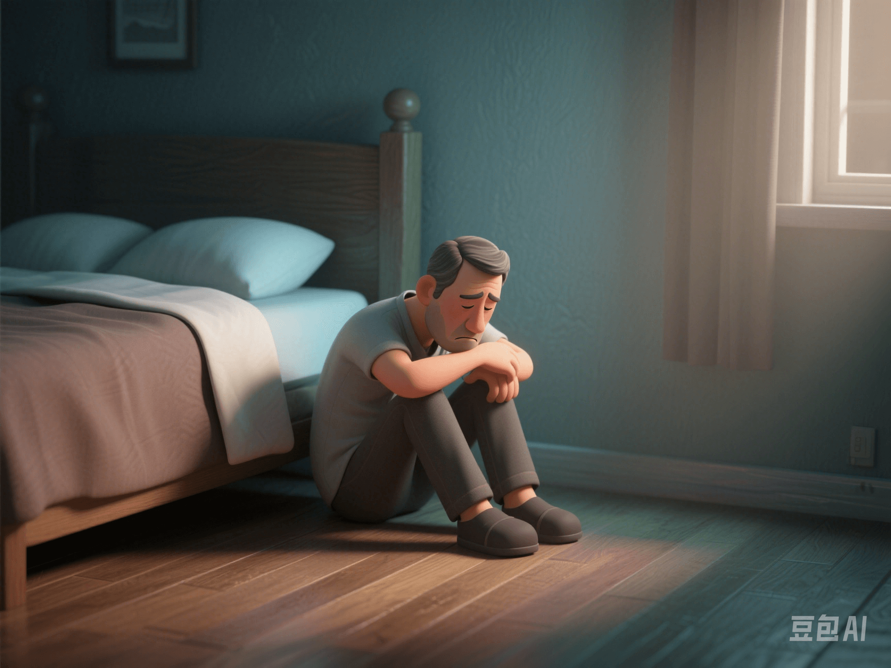

The Stigma of Male Mental Health
PeaceLove.Top Insights :2025-04-12
👋 Hello! Today, let's talk about a crucial topic that many people overlook - the stigma of male mental health.
🧠 What is the'stigma of male mental health'?
The mental - health problems of men are often regarded by society as signs of 'weakness' or 'incompetence'. This leads to a large number of men being reluctant to express their emotions or seek professional help. This phenomenon is called the stigma of mental health. Especially in the case of male depression, such situations are often ignored or misdiagnosed. Because men are under the traditional expectations of'strong' and 'not crying' in society, it's more difficult for them to admit their vulnerability and emotional problems.
📊 Data reveals: The treatment rate of male depression
- According to research, the treatment rate of male depression is much lower than that of women, about 40%. In other words, more than 60% of men don't seek professional treatment or help when experiencing depression.
- Compared with the treatment rate of female depression, men are reluctant to seek psychological counseling or treatment because they are afraid of being seen as 'weak' or 'failures'.
- Even in some cultures, depression is considered a 'female patent'. Even if men show obvious depressive symptoms, they are often not taken seriously or supported by those around them.
💔 Why are men more likely to face the stigma of mental health?
1. Social gender - role expectations
From childhood, men are often told to be'strong' and 'independent' and to avoid expressing emotions. Especially emotional vulnerability, such as sadness, depression, and anxiety, is often regarded as 'not manly' or 'unworthy of taking responsibility'.
2. Cultural and social pressure
In many cultures, men bear the responsibility of'supporting the family'. The social success standard for men is higher than that for women. Mental - health problems are seen as a sign of personal failure, which makes men dare not talk about or seek help.
3. Differences in symptom presentation
The symptoms of male depression are often less obvious. They may be more likely to show behaviors such as anger, irritability, and violent tendencies, rather than the 'typical' sadness or low - mood. This 'hidden' depression makes it difficult for people around to notice, which further intensifies their tendency not to seek help.
🩺 Consequences of affecting male mental health
- Self - isolation: When men encounter depression or anxiety, they are more likely to choose to bear it alone and are reluctant to share with others. This isolation may exacerbate the symptoms and lead to further emotional closure.
- High - risk behaviors: Many studies show that untreated depression may lead men to take more extreme behaviors, such as alcoholism, drug abuse, and even suicide. The suicide rate of men is usually much higher than that of women, partly because they don't seek enough psychological help.
- Physical - health problems: Mental - health problems are closely related to physical health. If men's psychological stress is not effectively released, it may trigger health problems such as high blood pressure and heart disease, forming a vicious circle.
🌍 How to change this phenomenon? [Advocacy and guidance suggestions]
1. Reduce stigma and encourage emotional expression
Society needs to create a more inclusive environment to encourage men to express their emotions and vulnerability. We can convey the message that 'emotional expression is a sign of strength' through education, the media, and public activities. For example, movies and TV shows can also include more male characters who bravely face and express their emotions, showing how men deal with mental - health problems such as depression and anxiety.
2. Raise public awareness and advocate mental - health education
Through online and offline educational activities, raise the awareness of the male group about mental health. Events like 'World Mental Health Day' can be a good opportunity to hold mental - health lectures exclusive to men, popularizing the basic knowledge of mental health and emotion - regulation skills to them.
3. Establish a support system: Comprehensive support from family to society
○ Family level: The support of parents, spouses, and friends is particularly important. Encourage male family members to understand and respect that men also need emotional care. Family members should create a non - judgmental space where men can freely express their feelings and avoid regarding their emotional distress as a 'weakness'.
○ Social level: The government and society can provide more support projects for male mental health. For example, add mental - health services in companies, schools, and communities, providing psychological counseling and support groups specifically for the male group to help them break through the barriers of mental health.
4. Promote male mental health in education and the workplace
○ Schools can offer 'emotional education' courses to help boys develop emotional - management and communication skills from an early age, reducing their neglect of mental - health problems in adulthood.
○ In the workplace, more psychological - support opportunities should be created for men, such as setting up employee mental - health hotlines and psychological - counseling services, so that men are no longer ashamed to seek help when facing work pressure.
5. Advocate male - health activities and sports
Encourage men to relieve stress and release emotions through healthy ways such as sports and meditation. For example, organize more male sports clubs and offer courses such as yoga and meditation, so that they can regulate psychological stress while exercising. Sports can not only improve physical health but also promote mental health.
6. Build a safe mental - health treatment platform
We should promote the establishment of more mental - health treatment platforms and online - counseling services designed specifically for men, so that men can consult professional psychologists in an anonymous and low - pressure environment. Such platforms should focus on providing practical psychological - regulation skills to help men more effectively cope with stress, anxiety, and depression.
🧘♂️ Conclusion: You're not alone
The stigma of male mental - health problems not only harms individuals' mental health but also damages the overall well - being of society. If your male friends around you or you yourself feel anxious or depressed, remember to seek professional help. You're not a 'weakling'; you just need understanding and support.
💬 Be brave to express and be brave to seek help. Let's break the prejudice that'men should be strong' together and build a more understanding and supportive society.